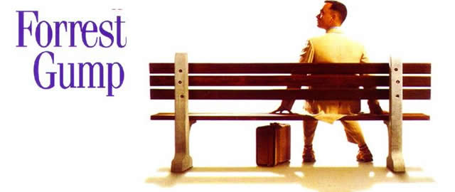
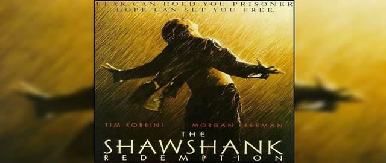
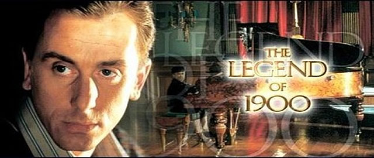
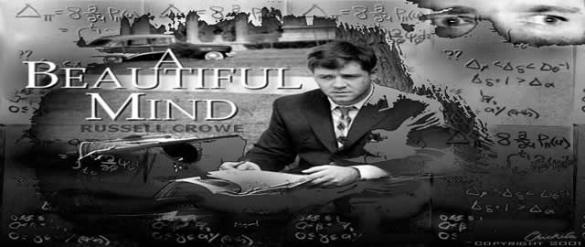
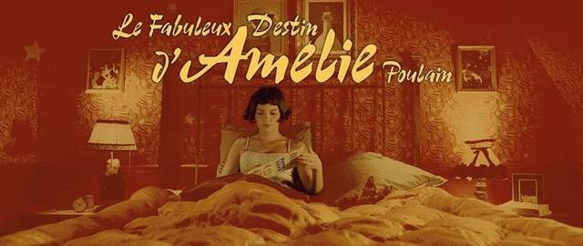

-
放牛班的春天 克莱门特是一个才华横溢的音乐家，不过在1949年的法国乡村，他没有发展自己才华的机会，最终成为了一间男子寄宿学校的助理教师，名为“池塘底教养院”。这所学校有一个外号叫"池塘之底"，因为这里的学生大部分都是一些顽皮的儿童。到任后克莱门特发现学校的校长以残暴高压的手段管治这班问题少年，体罚在这里司空见惯，性格沉静的克莱门特尝试用自己的方法改善这种状况，闲时他会创作一些合唱曲，而令他惊奇的是这所寄宿学校竟然没有音乐课，他决定用音乐的方法来打开学生们封闭的心灵。马修开始教学生们如何唱歌，但事情进展得并不顺利，一个最大的麻烦制造者就是皮埃尔·莫昂克，皮埃尔拥有天使的面孔和歌喉却有着令人头疼的调皮的性格，谆谆善诱的克莱门特把皮埃尔的音乐天赋发掘出来，同时他也与皮埃尔的母亲产生了一段微妙感情，但却是一厢情愿。最后因为失火事件被校长解雇，临走前带走了佩皮诺。
-
当幸福来敲门 克里斯·加德纳的成长过程并没有父亲的陪伴，28岁才第一次见到父亲。于是当他也做了父亲的时候，他发誓要做一个称职的好爸爸。然而天不遂愿，这位单身父亲屡遇不顺，遭遇失业等不幸，和年幼的儿子相依为命、流离失所。为了儿子的幸福，加德纳咬紧牙关重新振作，处处向机会敲门，并毛遂自荐进入一家证券公司工作，从最底层的员工做起。终于皇天不负苦心人，他最后成为知名的金融投资家。之后，他慷慨解囊，热心捐助公益活动，成为全美知名的慈善人物。而过程中支持他咬紧牙关的最大动力，除了宝贝儿子外，就是他始终相信：只要今天够努力，幸福明天就会来临。
-

阿甘正传 阿甘是个智商只有75的低能儿。在学校里为了躲避别的孩子的欺侮，听从一个朋友珍妮的话而开始“跑”。他跑着躲避别人的捉弄。在中学时，他为了躲避别人而跑进了一所学校的橄榄球场，就这样跑进了大学。阿甘被破格录取，并成了橄榄球巨星。在大学毕业后，阿甘又应征入伍去了越南。在那里，他有了两个朋友：热衷捕虾的布巴和令人敬畏的长官邓·泰勒上尉。这时，珍妮已经堕落，过着放荡的生活。甘一直爱着珍妮，但珍妮却不爱他。在战争结束后，甘作为英雄受到了约翰逊总统的接见。在一次和平集会上，甘又遇见了珍妮，两人匆匆相遇又匆匆分手。在“说到就要做到”这一信条的指引下，甘最终闯出了一片属于自己的天空。他告发了水门事件的窃听者，作为美国乒乓球队的一员到了中国，为中美建交立下了功劳。猫王和约翰·列侬这两位音乐巨星也是通过与他的交往而创作了许多风靡一时的歌曲。最后，甘通过捕虾成了一名企业家。甘经历了世界风云变幻的各个历史时期，但无论何时，无论何处，无论和谁在一起，他都依然如故，纯朴而善良。
-

肖申克的救赎 是一部1994年上映的美国经典剧情电影，改编自斯蒂芬·金《不同的季节》中收录的《丽塔海华丝及萧山克监狱的救赎》。影片由法兰克·戴伦邦特执导，蒂姆·罗宾斯，摩根·弗里曼主演。电影讲述了安迪被冤入狱和在狱中的种种经历，并设法通过自己的救赎重新获得自由的故事。在1994年的奥斯卡金像奖上，本片获得七项提名，但最终未能获得任何奖项。令人意外的是，虽然该片在电影院公映时并未获得太多好评，但却在家庭影院市场和出租市场获得的巨大成功，至今已经成了著名案例。
-

海上钢琴师 男主角1900一个被人遗弃蒸气船上孤儿被船上一位好心烧炉工收养然而烧炉工一次意外中死亡只有几岁大1900又再度成为了孤儿过人天赋使无师自通成了一名钢琴大师但宿命也令天然地对红尘俗世深怀戒意从不敢离船上岸去只因纽约无际高楼和川流不息人群令没有安全感纵使后来遇上了一位一见钟情少女思量再三后还永远地留船上了直到唯一好朋友警告废船将要被炸毁也不愿离开于从出生开始就没有离开过维吉尼亚号1900殉船于海底。
-

美丽心灵 《美丽心灵》是一部关于一个真实天才的极富人性的剧情片。故事的原型是数学家小约翰福布斯纳什(Jr.John Forbes Nash)。英俊而又十分古怪的纳什早年就做出了惊人的数学发现，开始享有国际声誉。但纳什出众的直觉受到了精神分裂症的困扰，使他向学术上最高层次进军的辉煌历程发生了巨大改变。面对这个曾经击毁了许多人的挑战，纳什在深爱着的妻子艾丽西亚(Alicia)的相助下，毫不畏惧，顽强抗争。经过了几十年的艰难努力，他终于战胜了这个不幸，并于1994年获得诺贝尔经济学奖。这是一个真人真事的传奇故事，今天纳什继续在他的领域中耕耘着。
-

天使艾米丽 ，一部余香袅袅的巴黎版灰姑娘童话。影片中浪漫之都巴黎优美明丽如世外的仙境，不染任何俗世的尘埃。影片用极其鲜明的影像语言，用像水果般丰富多汁的笔墨将少女忧伤的心思悸动徐徐展开在银屏上，变化成观众眼里一幕幕动人画卷。而少女那强烈的憧憬又像海上的飞鸥一声声呼喊，哀伤里有一种真诚的性感和坚决。《天使爱美丽》是一部让人投入肺腑和肝胆的美好世界。那些不伤大雅的小小恶作剧，就像少年在沙滩上玩着时光的沙漏。艾米丽，她独步踏行在巴黎街头，艳丽的阳光将她的心地照见一片澄澈，宛若天使落入凡间。天使——艾米丽！诸多奇思妙想，构筑一个孤独女孩守望在爱的旅途中，她一路孤单，一路跋涉，也带给我一路观赏的惊喜。